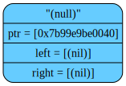

TREE DUMP called at source/tree.cpp:56:TreeCtor(): After ctor
&tree[0x7b69e8a00030] initialized in {source/main.cpp:13}
tree->size = 0;

NODE DUMP called at source/tree.cpp:265:TreeLoadNode(): Created new node - ""ловит мышей"("Полторашка"nilnil)("таракан"nilnil))("любит много спать"("занимается ИИ"("Вадим"nilnil)("Василий"nilnil))("Вова"nilnil)))".
curPos = '("ловит мышей"("Полторашка"nilnil)("таракан"nilnil))("любит много спать"("занимается ИИ"("Вадим"nilnil)("Василий"nilnil))("Вова"nilnil)))'
NODE DUMP called at source/tree.cpp:265:TreeLoadNode(): Created new node - ""Полторашка"nilnil)("таракан"nilnil))("любит много спать"("занимается ИИ"("Вадим"nilnil)("Василий"nilnil))("Вова"nilnil)))".
curPos = '("Полторашка"nilnil)("таракан"nilnil))("любит много спать"("занимается ИИ"("Вадим"nilnil)("Василий"nilnil))("Вова"nilnil)))'
NODE DUMP called at source/tree.cpp:265:TreeLoadNode(): Created new node - "ilnil)("таракан"nilnil))("любит много спать"("занимается ИИ"("Вадим"nilnil)("Василий"nilnil))("Вова"nilnil)))".
curPos = 'nilnil)("таракан"nilnil))("любит много спать"("занимается ИИ"("Вадим"nilnil)("Василий"nilnil))("Вова"nilnil)))'
NODE DUMP called at source/tree.cpp:270:TreeLoadNode(): After creating left subtree.
curPos = '("таракан"nilnil))("любит много спать"("занимается ИИ"("Вадим"nilnil)("Василий"nilnil))("Вова"nilnil)))'
NODE DUMP called at source/tree.cpp:265:TreeLoadNode(): Created new node - "ilnil))("любит много спать"("занимается ИИ"("Вадим"nilnil)("Василий"nilnil))("Вова"nilnil)))".
curPos = 'nilnil))("любит много спать"("занимается ИИ"("Вадим"nilnil)("Василий"nilnil))("Вова"nilnil)))'
NODE DUMP called at source/tree.cpp:275:TreeLoadNode(): After creating right subtree.
curPos = ')("любит много спать"("занимается ИИ"("Вадим"nilnil)("Василий"nilnil))("Вова"nilnil)))'
NODE DUMP called at source/tree.cpp:270:TreeLoadNode(): After creating left subtree.
curPos = '("любит много спать"("занимается ИИ"("Вадим"nilnil)("Василий"nilnil))("Вова"nilnil)))'
NODE DUMP called at source/tree.cpp:265:TreeLoadNode(): Created new node - ""занимается ИИ"("Вадим"nilnil)("Василий"nilnil))("Вова"nilnil)))".
curPos = '("занимается ИИ"("Вадим"nilnil)("Василий"nilnil))("Вова"nilnil)))'
NODE DUMP called at source/tree.cpp:265:TreeLoadNode(): Created new node - ""Вадим"nilnil)("Василий"nilnil))("Вова"nilnil)))".
curPos = '("Вадим"nilnil)("Василий"nilnil))("Вова"nilnil)))'
NODE DUMP called at source/tree.cpp:265:TreeLoadNode(): Created new node - "ilnil)("Василий"nilnil))("Вова"nilnil)))".
curPos = 'nilnil)("Василий"nilnil))("Вова"nilnil)))'
NODE DUMP called at source/tree.cpp:270:TreeLoadNode(): After creating left subtree.
curPos = '("Василий"nilnil))("Вова"nilnil)))'
NODE DUMP called at source/tree.cpp:265:TreeLoadNode(): Created new node -